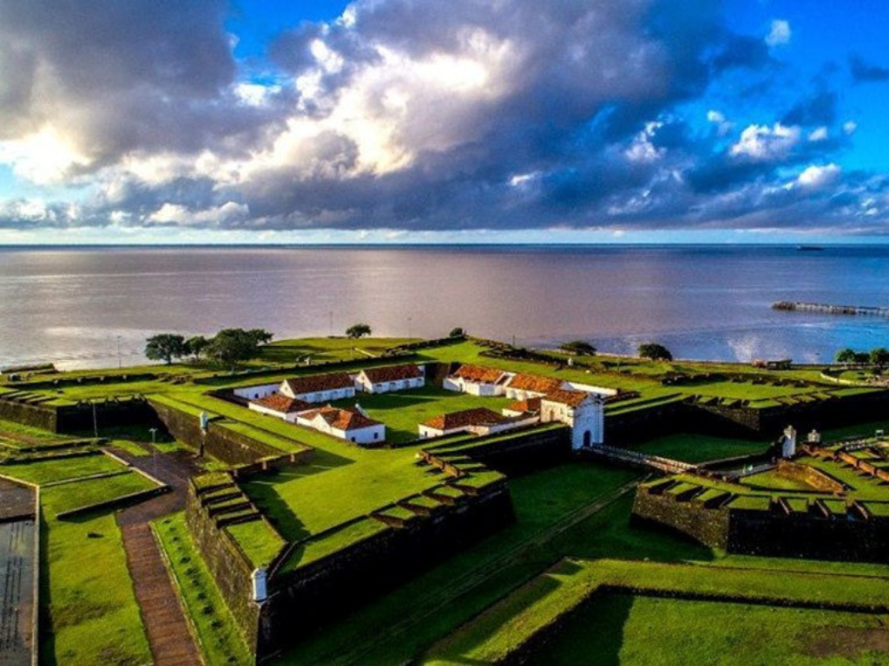

Amapá está localizado no extremo norte do Brasil e possui características naturais muito importantes para a preservação ambiental, já que grande parte de seu território é composta por áreas protegidas e floresta amazônica. Sua capital é Macapá, cidade conhecida por ser cortada pela Linha do Equador, fato que atrai turistas de várias regiões do país. O estado faz fronteira com a Guiana Francesa e o Pará, tendo grande importância estratégica para o Brasil. A economia do Amapá é baseada na mineração, no extrativismo vegetal, na pesca e nos serviços. O estado também possui rica diversidade cultural, com manifestações influenciadas pelos povos indígenas, africanos e portugueses. As festas populares, as danças típicas e a culinária regional fazem parte da identidade cultural amapaense.

Voltar